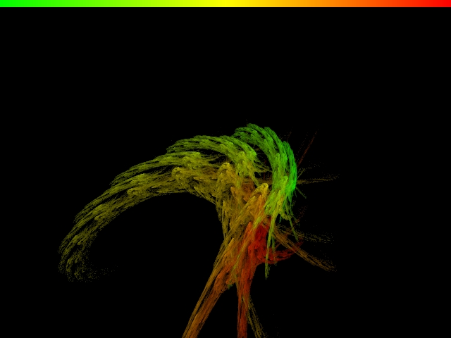

An example flame parameter set
For these examples, we are using 3 linear transforms, each with p=1/3, with the following parameters:
p_xf0_cfa=0.646257
p_xf0_cfb=-0.283822
p_xf0_cfc=1.3588
p_xf0_cfd=0.00255696
p_xf0_cfe=-0.211129
p_xf0_cff=-3.12319
p_xf1_cfa=0.977672
p_xf1_cfb=-0.552303
p_xf1_cfc=0.381126
p_xf1_cfd=0.465366
p_xf1_cfe=-1.33674
p_xf1_cff=-0.0590757
p_xf2_cfa=0.256568
p_xf2_cfb=0.0805013
p_xf2_cfc=-0.334069
p_xf2_cfd=0.480298
p_xf2_cfe=1.49009
p_xf2_cff=0.366954
Color values for transforms
We have a gradient that maps [0,1] to various colors. What color value should we set for each transform in order to best show the structure of the flame?
One option is to let the first transform have a color value of 1.0 and the rest to have a color value of 0. This produces the following image:
Note that the gradient is shown across the top of each image for reference.
Is this really showing the structure? What if we let the three transforms have color values of 1.0, 0.5, and 0 respectively? Then we get the following image, which is quite different:

To make the above images, we used the Draves method, where we iterated over (x,y,c), and set c' = ( c + transformC ) / 2. Pixels are colored by the average of all c values that hit them (with brightness equal to the log of the hit count for the pixel).
There are actually 3 visual structures in this flame, one for each transform. To demonstrate this, we can use a slightly different formula in each iteration: c' = transformC. We get the following image:
Definitely not as pretty, but perhaps more revealing in terms of the underlying math.
Of the above two averaging-based transform colorings, the [1.0, 0.5, 0] coloring certainly shows more of this structure while still having smooth color transitions.
Color accumulation at each pixel
Above, we mentioned that "pixels are colored by the average of all c values that hit them." We have two choices here: We can simply keep a running sum of all c values that hit each pixel, or we can keep a running sum of the corresponding R, G, and B values by mapping c into the gradient each time. With either method, we eventually divide the sum(s) by the pixel's hit count to color the pixel.
The idea here is that, by keeping track only of the average RGB values for a pixel, we may be missing some of the structure present in the gradient. If we average the c values and only map into the color map in the end, the average c value may fall onto some structure in the gradient that the averaged RGB values might miss.
To highlight this point, we have modified our gradient to include a magenta discontinuity. The following image is rendered with the RGB-averaging method:
The next image is rendered with the c-averaging method:
Notice that the gradient discontinuity is preserved only by the c-averaging method. Of course, the discontinuity is not pleasing to the eye, so the RGB-averaging method produces a prettier image. The RGB-averaging method effectively smoothes our gradient, losing some of the information that it contains. However, if we wanted our gradient to be smooth, we could have smoothed it before feeding it into the algorithm.
The conclusion here is that the RGB-averaging method gives us less control over the rendered image.
Apophysis method
In Apophysis, the [1.0, 0, 0, 0 ...] color assignment is used instead of the more general color assignment (where the user can pick a c value for each transform). Also, Apophysis (according to this author's best understanding of the source code) uses the RGB-averaging method. This document demonstrates that these subtle limitations do make a noticeable difference in the output quality.The following image was rendered by Apophysis (note that the brightness/contrast and zoom factor differ from the other images shown here, but the coloring method is still comparable):
Final Algorithm (for linear transforms)
For each transform, we have coefficients [a, b, c, d, e, f], where transform is defined by
x' = a*x + c*y + e
y' = b*x + d*y + f
We also have a probability p for each transform such that the sum of all of the transform probabilities is equal to 1. In addition, each transform is associated with a c value in the range [0,1]---this is the color of the transform.
Keep a cSum for each pixel, as well as a hitCount, with both starting at 0.
Start with x=rand(-1,1), y=rand(-1,1), and c=rand(0,1).
In each iteration:
--Pick a transform at random according to p probabilities.
--Compute x' and y' according to the chosen transform.
--Compute c' = (c + transform_c) / 2.
--Find pixel hit by x' and y'.
--Set pixel_cSum += c' and pixel_hitCount += 1.
--Let x=x', y=y', and c=c' for the next iteration.
To render each of the final pixels:
--Compute pixel_c = pixel_cSum / pixel_hitCount. This is the average c value over all hits for a given pixel.
--Map pixel_c into the color gradient to get [R,G,B] values for the pixel.
--Compute pixel_brightness = k1 * log( 1 + pixelHitCount * k2 ), where k1 and k2 are parameters that control the overall brightness/contrast of the image. The pixel_brightness value should be in [0,1].
--Scale [R,G,B] by this brightness value. This scaled [R,G,B] value is the final color value for the pixel.